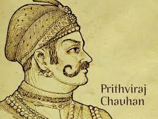

PrithviRaj Chauhan

Char Bans Chaubis Gaj, ungal asat parman; Ta upar sultan hai, mat chuke Chauhan.
- Prithviraja III (1177 - 1192 CE), popularly known as Prithviraj Chauhan or Rai Pithora, was a king from the Chauhan (Chahamana) dynasty who ruled the territory of Sapadalaksha, with his capital at Ajmer in present-day Rajasthan.
- Prithviraj led a coalition of several Rajput kings and defeated the Ghurid army led by Muhammad Ghori near Taraori in 1191 AD.
- The Chakravarti king of Delhi, Prithviraj Chauhan, defeated Sultan Mohammad Ghori of Ghor 17 times in a battle and granted him pardon every time Ghori apologized.
- The first battle at Tarain was fought between Prithviraj Chauhan and Ghori in 1191. Prithviraj Chauhan was ruling over Delhi and Ajmer in those days while Ghori was attacking after capturing several parts of Punjab.
- PrithviRaj Chauhan Killed Mohhammad Gori